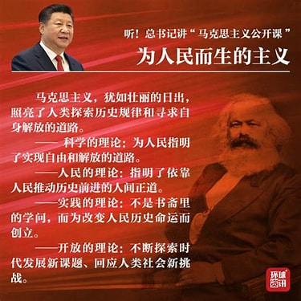

马克思主义：照亮人类前行的灯塔
马克思主义是关于全世界无产阶级和全人类彻底解放的学说，它深刻地改变了世界历史的进程。
什么是马克思主义？
马克思主义由马克思主义哲学、马克思主义政治经济学和科学社会主义三大部分组成。它是马克思、恩格斯在批判地继承和吸收人类关于自然科学、思维科学、社会科学优秀成果的基础上于 19 世纪 40 年代创立的，并在实践中不断地丰富、发展和完善的无产阶级思想的科学体系。
马克思主义的重要性
- 为社会变革提供理论指导。
- 揭示了资本主义的本质和发展规律。
- 为实现人类解放指明了方向。
马克思主义经典名言
“哲学家们只是用不同的方式解释世界，而问题在于改变世界。”——马克思